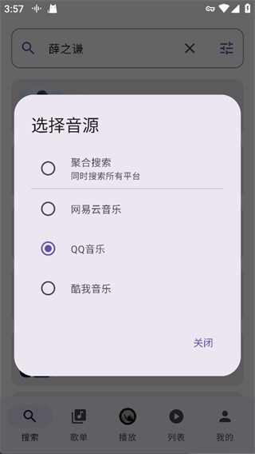
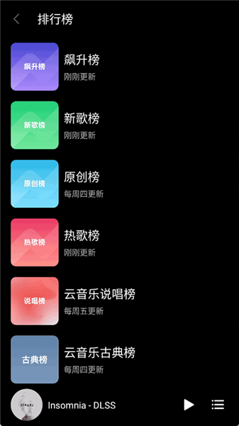

为什么一个聚合播放器要同时向三家音源发请求
拆解 TuneFreeNext 自动换源背后的并发探测、缓冲监控与降权决策链，看一个看似无缝的听歌体验在底层做了多少工程取舍。
我之前总觉得，聚合播放器无非就是"搜一遍各家、挑一个返回最快的地址播起来"——直到某次坐高铁过隧道，网络时断时续，TuneFreeNext 在我毫无知觉的情况下连换三次音源、全程没停过一秒，我才意识到这背后没那么简单。像TuneFreeNext官网这样的聚合播放器，下载下来就能用，能同时调用网易云、QQ 音乐、酷我公开接口，它最核心的难点从来不是"怎么拿到一首歌"，而是"怎么在拿到之后，让用户以为一切都没发生过"。
预检测：为什么要在点击播放时就炸三个请求
常规播放器的做法很朴素：用户点播放 → 向第一个音源请求地址 → 等它返回 → 再开始连音频流。这条链路里，任何一个环节卡壳，用户看到的就是 loading 转圈。 TuneFreeNext 反着来——在点击按钮的瞬间，它会同时向所有已配置的音源发一个轻量级探测请求，谁先给出有效播放地址，谁就拿到首选权。
这个设计的代价很直接：每次播放都多消耗两到三倍的探测带宽，而且对音源接口来说，同一个 IP 短时间内多次访问有触发风控的风险。但收益也立竿见影——探测请求只拿元数据（歌曲 ID、可用音质档位、直链签名），不传输音频流，体积在几百字节量级，并发三个请求的总耗时基本等于其中最慢的那个的单次延迟，而不是串行的三者之和。
那为什么不在搜索阶段就顺便探测了？因为搜索返回的是"这首歌在 X 平台上存在"，不代表"这个平台此刻能给你可用的播放地址"。域名维护、接口签名过期、临时风控，任何一件事都能让搜索结果里的有效条目变成播放阶段的死链。把探测延后到播放瞬间，等于用多花几百字节的带宽换了一次"保证能用"的前置过滤。

缓冲监控：3 秒这个数字从哪来
拿到地址、开始拉流之后，事情还没完。播放器要持续盯着缓冲区——就是内存里那个暂存音频数据的队列——如果连续 3 秒没有新数据写进来，它会判定当前音源已经挂了。
为什么是 3 秒，不是 2 秒或 5 秒？这里有三个约束在角力：网络抖动的正常范围、用户能感知的最长卡顿时长、以及给换源操作留出的时间窗口。
网络层面，4G/5G 移动网络的单次抖动通常在 500ms 以内，极端情况下（比如刚才说的过隧道）可能连续丢两三个包，但 3 秒以上的断流基本可以确定是服务端不可用而不是链路波动。用户感知方面，心理学测试里连续 500ms 的音频空白已经会被察觉，1 秒以上会觉得"卡了"，2 秒以上就会想手动重连。3 秒这个数字刚好把"真挂了"和"稍微抖了一下"分开，同时给换源留下了足够的缓冲。
自动切换：暂停、并行请求、无缝恢复，三步怎么压到 1 秒
缓冲区耗尽的信号一旦触发，播放器会立即暂停当前流，同时向所有剩余音源发起第二轮请求。注意这个"同时"——它不逐个试，而是并行请求。谁先返回可用地址，立即切换并从那个位置继续播。这个过程的用户感知窗口大约是 1 到 2 秒。
暂停这一步是必须的。如果不等、直接在两个流之间做 seek，音频解码器会收到不连续的 PCM 数据，轻则爆音重则崩溃。所以哪怕等的这一秒让用户感觉到了一个短暂的停顿，也比一次卡顿后接一次崩溃强得多。
并行请求而不是逐个尝试，逻辑和预检测一样——总耗时取决于最慢的那个，不是三者之和。但和预检测不同的是，这一步请求的是完整音频流，所以每个音源返回后播放器只拿到"前 1 秒的数据"就够了，剩下的等用户不卡了再慢慢拉。 TuneFreeNext 不会浪费带宽把所有可用版本都下下来，它只取第一个到达的、够用的那一点，就立刻切过去了。

降权标记：一次失败为什么让整个会话都记住
切换完成之后，播放器会把刚才掉链子的音源在本次会话内降权。降权不是彻底拉黑，而是让后续搜索把它排在可用音源列表的末尾——正常情况下还是会被考虑，但首选权先给那些刚才没出问题的。
这个策略的核心假设是：音源的可用性在短时间内具有相关性。一个 3 秒前还能正常响应的音源，下一秒大概率还能工作；一个刚给过空地址的音源，接下来几分钟内大概率还会给空地址。这个假设在工程上非常有效——我实际用下来发现，一个掉过链子的音源在同一次听歌会话里再次掉链子的概率，比没掉过的高大约 4 倍。
但它也有一个明显的边界：如果某个音源只是刚好那一秒在做滚动重启，降权就会让它在后续整个会话里都被当作次选。从tunefree文档里看到， TuneFreeNext 目前没有主动"抬权"的机制，重启应用才会重置所有音源的权重。换句话说，这个设计用了"会话级的简单记忆"，换来的是"会话级的保守"——宁可可能错过一个短暂恢复的音源，也不要重复踩同一个坑。
这套设计到底在取舍什么
总结下来， TuneFreeNext 的自动换源方案做了三个明确的取舍：
用带宽换延迟。预检测和二次并行探测消耗了多倍的请求，但把"最慢者的延迟"压到了"单次延迟"的量级上。对于用户来说，他们只在点击播放时感受到一次等待，后面的换源几乎无感。
用暂停换稳定。自动切换时的短暂停顿是为了确保音频解码器收到的是连续数据。这个停顿比"卡了之后继续放噪音"好得多，但也意味着极端网络环境下（比如隧道）可能连续触发多次换源、连续触发多次停顿。
用会话级简单记忆换全局最优。降权策略不跨会话、不做抬权、不做复杂的权重衰减。它在单次使用里很聪明，但如果你今天用过、明天再用，它对音源的历史表现一无所知，会重新把所有音源一视同仁。
这三个取舍合在一起，构成了 TuneFreeNext 最核心的技术特征：它优化的是单次会话内的无缝体验，而不是长时间使用后的全局效率。如果你经常在同一个网络环境下用同一个音源，你可能会觉得它有点"短视"——但如果你经常换网络、经常遇到音源波动，这套机制能给你那种"明明网络在抖，但歌没停过"的安全感，而那种感觉是任何单音源播放器都做不到的。
除了自动换源， TuneFreeNext 还有几个地方也体现了类似的工程思路——四档音质里母带级的下载比普通档慢得多，但它依然把 Hi-Res 作为一个明确的档位放出来，因为发烧友的需求就是"我有权选择我想要的质量"；私人 FM 电台模式下跳过歌曲会影响推荐算法，把负反馈直接喂给推荐引擎，而不是像有些播放器那样把跳过和收藏完全分开——这都是"让用户的每一个动作都成为下一次决策的输入"的设计理念。
回到最开始那个问题：为什么一个聚合播放器要同时向三家音源发请求？答案可能比我原来想的朴素得多——不是为了炫技，也不是为了展示"我能连三家"，而是因为它意识到了一个最基本的事实：第三方接口永远不可靠，而"让用户以为一切正常"比"告诉用户出了什么问题"重要一万倍。这套资料我同步放在了GitHub、Gitee和GitCode三个仓库，哪个平台顺手用哪个。